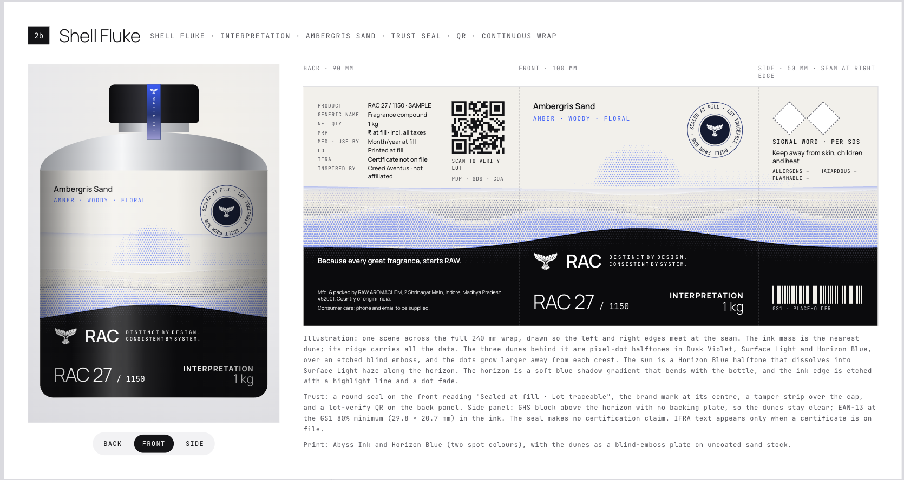
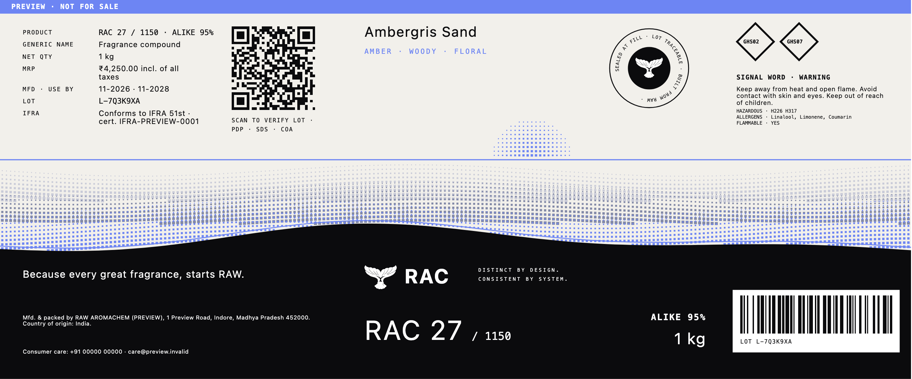
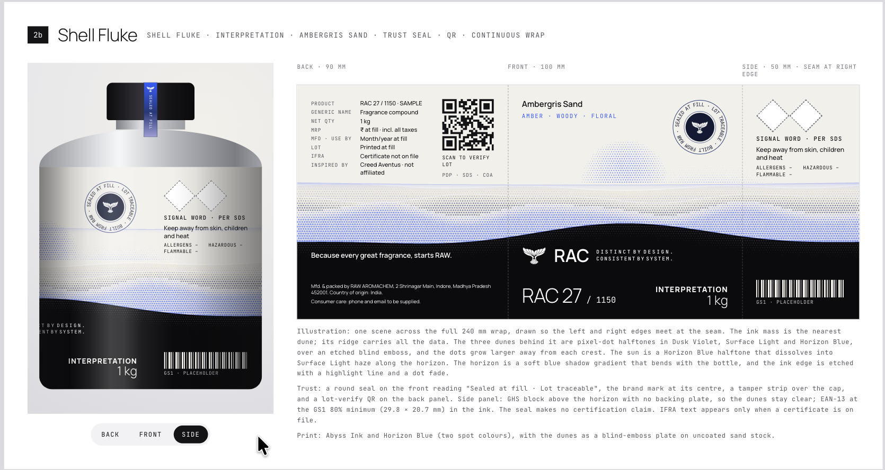
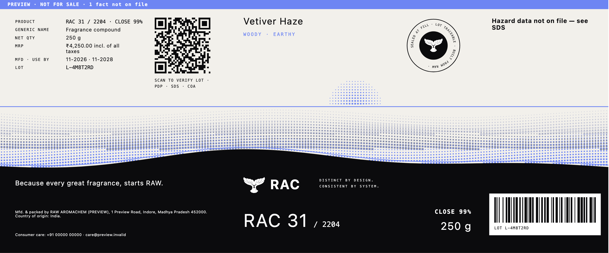
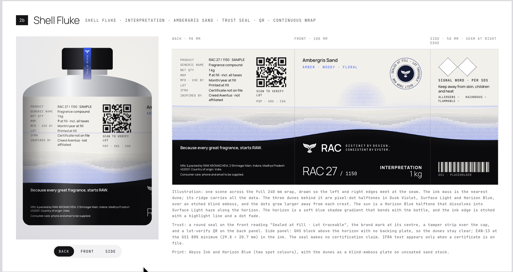
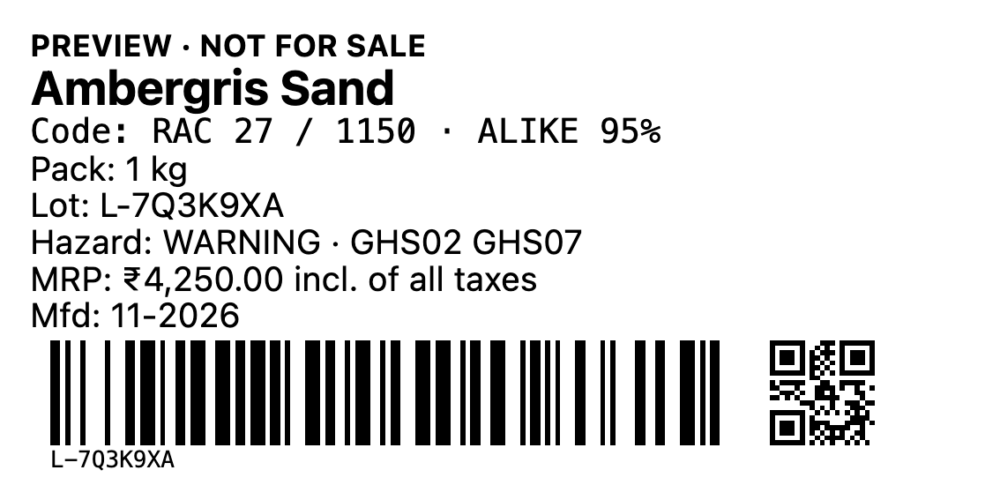
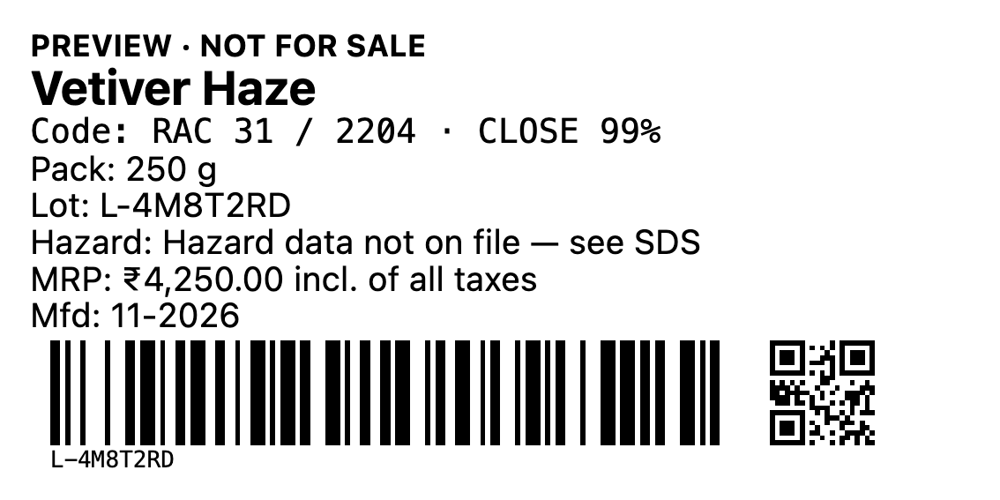

Built on purpose differently from the design: no INSPIRED BY row (OQ-LABEL-1), grade is the RAC final grade not INTERPRETATION, no EAN-13 (no GTIN; the lot Code 128 stays), QR opens ALEMBIC's lot-verify page, /store/lot/{code}, hazard text only from SDS data, and preview prints carry PREVIEW · NOT FOR SALE.







PDFs: *.wrap.pdf (preview inks), *.plates.pdf (the two spot inks only), *.front-100x50.pdf. Fixture facts are synthetic (preview.invalid), not records.